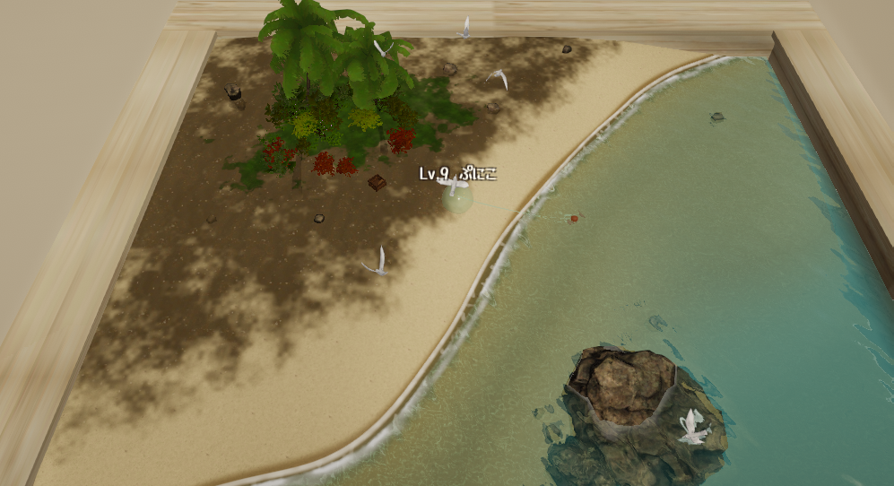

The pitch for this game is a fish index. You stand on a tiny island in a wooden crate, you catch things, and the index fills up.
On launch day that index had thirteen entries in it.

Content is not free in a browser
The obvious assumption is that adding a fish means adding a fish. Draw it, give it a name, put it in the table, done.
That is not what happens. Every species is data the browser has to hold and draw, and a browser tab is not a games console. Past a certain count the whole thing starts moving through treacle. Not crashing, which would at least be honest, but getting gradually worse in a way that makes the game feel cheap.
I hit that wall well before 172. The index was the core idea of the game and the platform was telling me the core idea was too expensive.
The fix was upstream of the fish
What I had to accept is that this was never a content problem. It was a rendering problem wearing a content problem's clothes.
As long as each additional fish cost the same as the last one, the number of fish was capped by the browser, and no amount of art was going to move that cap. So instead of adding fish, I went back and rewrote how fish get drawn, with one goal: make adding another one stop being expensive.
Once that was true, the cap moved from a technical limit to a question of how many I felt like designing. Thirteen became 172.
| Category | Count | What is in it |
|---|---|---|
| Common | 102 | Real fish and sea creatures, from red sea bream up to the blue whale, plus prehistoric ones like Xiphactinus |
| Fantasy | 51 | Invented for this game. Moon-Lantern Fish, Emberglass Koi, a juvenile rift leviathan |
| Mythos | 19 | Eleven Cthulhu Mythos entities and eight creatures from sea folklore |
The nineteen in the last row are the ones the game is really built around. The whole point is that you are quietly working through the tuna when something ancient takes the hook.
Then it paid for itself somewhere else
Here is the part I did not expect.
Months later I was building 500 Million Years, which has voice acting in it. Adding audio blew the build size up immediately, and for a browser game that is fatal in exactly the same way too many fish is fatal.
The compression approach I had worked out for the fish applied straight to audio files. Same problem shape, completely different content, and it worked the first time.
Solving a problem properly rather than working around it means you get to keep the solution. That is not a lesson I would have believed if someone had just told me.
The other things that broke
The index was the big one, but the launch window had the usual run of smaller failures.
| Date | What happened |
|---|---|
| July 24 | Online play added. The game stopped being solo and became six shared islands holding up to twelve people each |
| July 25 | The index shipped, which is when the rendering rewrite happened and the count jumped from thirteen |
| July 26 | Fixed players walking through walls, fixed a sea slug that was duplicating itself, and fixed a multiplayer bug where another player could take control of your character |
That last one is my favourite kind of bug: not a crash, not an error, just a player suddenly discovering that someone else is driving.
Why the waiting is not padding
One thing I get asked is why you have to sit and wait for a bite instead of just mashing.
If you press before the bite lands, the line comes back up empty. People read that as unresponsive controls. It is the opposite: the waiting is the mechanic. Take it out and the game becomes a button that dispenses fish, and the index stops meaning anything because filling it costs nothing but time spent pressing.
Once the bite hits, though, hesitation loses you the fish. How fast you go from that moment is more or less your catch rate. Slow, then sudden.
The index is still growing. Creature Fishing is free in the browser, no install and no account.